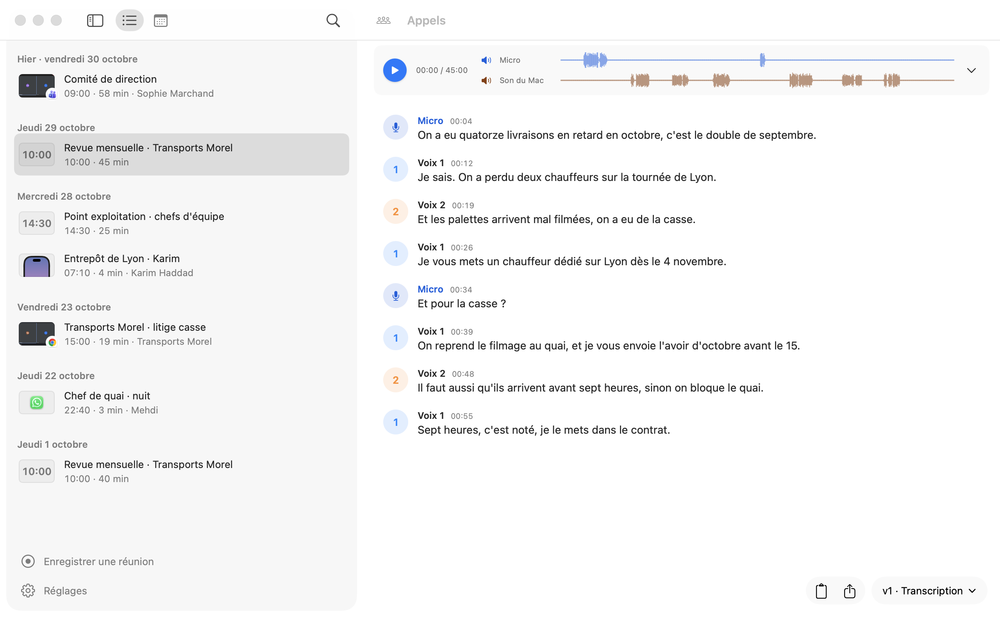
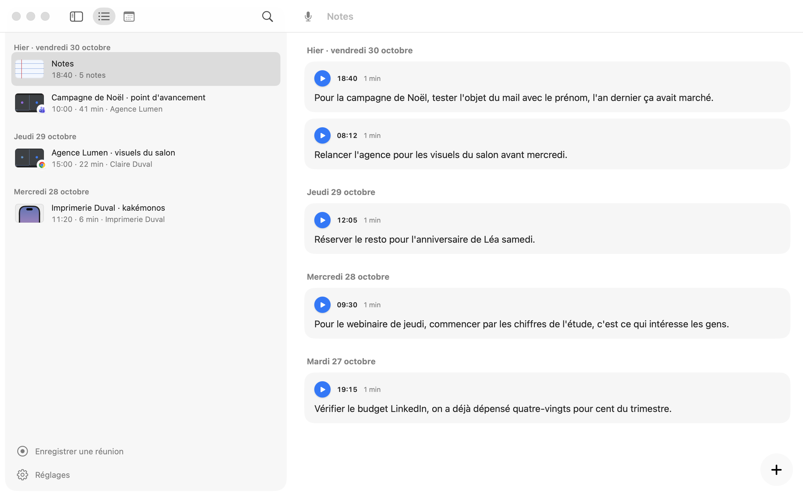
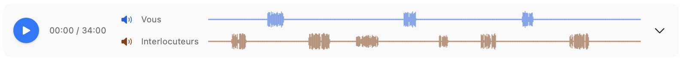
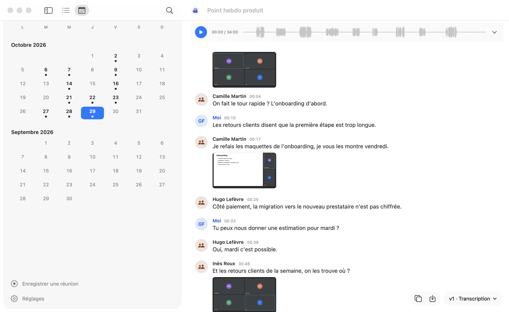

Fonctionnalités
Ce que fait CallRecorder, de l'enregistrement aux réponses de Claude.
Chaque appel s'enregistre tout seul
CallRecorder repère le moment où une app d'appel se sert du micro, et enregistre les deux côtés de la conversation jusqu'à ce qu'elle raccroche. Zoom, Teams, Google Meet, FaceTime, WhatsApp, Slack, Webex, Loom, Messenger, Doctolib, Jitsi : dans leur app ou dans Safari et Chrome.
Siri et la dictée ne déclenchent rien. Chaque app et chaque site a son interrupteur dans les Réglages, si vous préférez en laisser de côté.

Les réunions en face à face aussi
Un rendez-vous sans visio : posez le Mac sur la table et lancez l'enregistrement d'une réunion, depuis la barre des menus ou la fenêtre Appels. La conversation est transcrite comme un appel, chaque voix distinguée par l'endroit d'où vient le son : « Voix 1 », « Voix 2 »…

Les appels de votre iPhone et d'un Android
Avec Continuité, le Mac sert de combiné à l'iPhone : les appels pris sur le Mac sont enregistrés. Un Android branché en USB transmet les deux voix sans rien installer, et l'interlocuteur est retrouvé dans le journal d'appels.
Pixel 4a à 10, Galaxy à l'essai. Appels du réseau mobile seulement, pas WhatsApp ni Signal depuis le téléphone.

Une idée vous vient : dites-la, elle est notée
Où que vous soyez sur le Mac, fn + D ouvre vos notes et enregistre ; parlez, puis Entrée. La note est transcrite aussitôt, datée, à réécouter, et Claude la lit comme vos appels : « Range ce que je me suis dicté cette semaine ».
Un passage d'appel peut aussi devenir une note : surlignez-le dans la transcription, il garde l'appel d'où il vient, qui parle et à quel moment. Le même geste l'envoie à Claude avec ce qui l'entoure, ou corrige la réplique sur place.

La transcription est prête quelques secondes après l'appel
L'appel est transcrit sur votre Mac, par la reconnaissance vocale d'Apple, chaque passage dans sa langue. Chaque réplique a son heure et se cale sur l'enregistrement : un clic sur une phrase la fait entendre.
À côté de ce qui se disait, les captures de la visio : l'écran partagé, la diapositive du moment. En réunion, chaque voix reçoit un numéro et une couleur.
Pour n'écouter qu'une voix, séparez les pistes : une rangée par voix, chacune qu'on coupe à l'écoute.
Claude peut ensuite la relire avec ce qui était à l'écran, votre agenda et vos e-mails : les noms propres sont corrigés, l'appel reçoit un titre et ses participants. Chaque relecture est une nouvelle version, les précédentes restent dans le menu des transcriptions. C'est une option : la transcription, elle, reste faite sur le Mac.



Vos appels se retrouvent par jour, par nom ou par mot
Une ligne par appel, avec sa première capture, son app, son titre et sa durée. Le calendrier montre les jours où vous avez parlé à quelqu'un. La recherche (⌘F) fouille les transcriptions et se limite aux groupes de votre choix.

Claude, Codex et les autres assistants lisent vos appels
Demandez à Claude « Qu'est-ce que j'ai promis à Paul jeudi ? » : il retrouve l'appel, le lit et vous répond, citations à l'appui. Claude Code, Claude Desktop et Codex (en bêta) sont reliés dès l'installation.
CallRecorder est un serveur MCP local : Cursor, VS Code, Gemini CLI, LM Studio et les autres assistants compatibles s'y branchent en trois lignes de configuration.

Claude range chaque appel dans le bon groupe
Un groupe réunit les appels qui vont ensemble : un client, un recrutement, le perso. Donnez-lui un sous-titre, et Claude y range les nouveaux appels après chaque conversation.
Un groupe peut rester hors des IA : ses appels ne sont jamais montrés à un assistant, ni copiés en ligne.

Vos appels restent des fichiers à vous
Tout est dans un dossier de votre Mac, en Markdown ; ce dossier peut vivre dans Google Drive, iCloud Drive ou Dropbox. Une copie de certains groupes peut aussi partir dans un dossier en ligne, avec un index, pour ChatGPT, Zapier ou un script.
Chaque transcription s'exporte en texte, Word, Markdown ou sous-titres. L'audio part à la corbeille au bout de 7 jours, une durée réglable ; Claude peut en garder un.

Les nouvelles versions viennent à vous
CallRecorder vous propose chaque nouvelle version, et l'installe d'un clic. Le journal dit ce que chacune apporte, capture à l'appui.